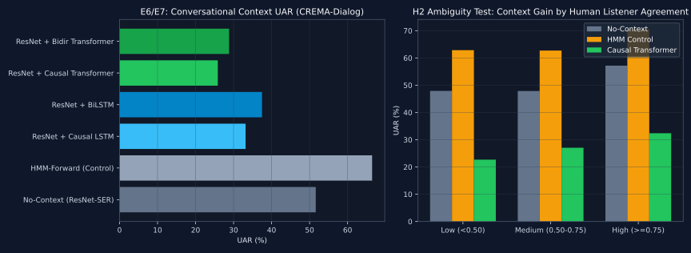
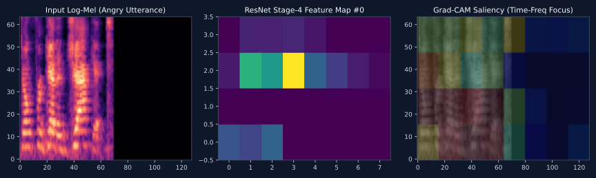
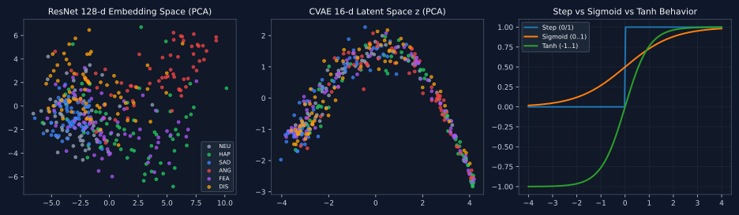

2. Research Benchmark Visualizations
E1 & E2 Architecture Benchmarks

Stage C Context & Agreement Gain

Item 8 Segmentation & Detection

Grad-CAM & Feature Maps

Latent Space & Step/Sigmoid/Tanh

Confusion Matrix & Calibration